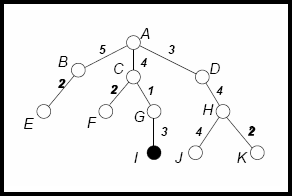
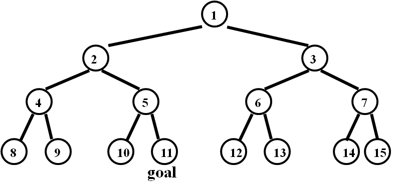

- For
each of the following agent environments, decide if it is fully or
partially observable, deterministic or stochastic, static or dynamic,
and discrete or continuous:
- playing poker.
- robot soccer player.
- autonomous Mars rover.
- playing tic-tac-toe.
- mathematician's theorem-proving assistant.
Answer
- playing poker: partially observable, stochastic,
static, discrete.
- robot soccer player: partially observable, stochastic,
dynamic, continuous.
- autonomous Mars rover: partially observable,
stochastic, dynamic, continuous.
- playing tic-tac-toe: fully observable, deterministic,
static, discrete.
- mathematician's theorem-proving assistant: fully
observable, deterministic, static, discrete.
- Suppose
that an agent lives in a grid world of size 5 x 5 (for a total of 25
squares). The agent has two sensors: a GPS sensor, which informs the
agent of its current location on the grid, and a camera sensor, which
informs the agent of the color on the current square and the four
adjacent squares. The agent, at each step, moves left, right, top,
bottom. 24 of the 25 squares are safe, and one square (at location 4,3)
is dangerous. The current location of the agent is safe.
a. If the
agent is reflex-based, the safe squares are green, and the dangerous
square is red, is it possible for this agent to follow a safe strategy
that will always avoid the dangerous square? If yes, what is that
strategy?
Answer
Yes, the strategy is to never visit a red square.
b. If the agent is reflex-based, and all
squares (safe and dangerous) are green,
is it possible for this agent to follow a safe strategy that will
always avoid the dangerous square? If yes, what is that strategy?
Answer
Yes, the strategy is to never visit location (4,3), which can be
achieved because the agent has a GPS sensor.
- For
the following tree, show the order of nodes visited for breadth-first
search, depth-first search, uniform cost search, and iterative
deepening search . The goal node is I and the numbers next to the edges
indicate the associated cost.

Answer
Note: in all methods, after goal node I is visited, the search stops.
BFS: ABCDEFGHI
DFS: ABECFGI
UCS: ADCBGFEHI
IDS:
first iteration: A
second iteration: ABCD
third iteration: ABECFGDH
fourth iteration: ABECFGI
- Does a finite state space always lead to a finite search
tree? Justify your answer.
Answer
Yes
if the algorithm remembers states already visited and thus avoids
visiting each state an infinite number of times. No if the algorithm
does not keep track of states already visited.
- Textbook
exercise 3.8, parts (a) and (b): Consider a state space where the start
state is number 1 and the successor function for state n returns two
states, numbers 2n and 2n+1.
a.
Draw the portion of the state space for states 1 to 15.
Answer

b.
Suppose the goal state is 11. List the order in which nodes will be
visited for breadth-first search, depth-limited search with limit 3,
and iterative deepening search.
Answer
BFS: 1, 2, 3, 4, 5, 6, 7, 8, 9, 10, 11
DLS (depth limit 3): 1, 2, 4, 5, 3, 6, 7
IDS:
first iteration: 1
second iteration: 1, 2, 3
third iteration: 1, 2, 4, 5, 3, 6, 7
fourth iteration: 1, 2, 4, 8, 9, 5, 10, 11
- Describe
a state space with 5 states, where the number of nodes visited by
iterative deepening search (including the start node) is 15.
Answer
Quick answer: S1 -> S2 -> S3 -> S4 -> S5
More detailed answer:
States: S1, S2, S3, S4, S5.
Root: S1
Child of S1: S2
Child of S2: S3
Child of S3: S4
Child of S4: S5
- Suppose
that we are given a roadmap of the United States (i.e., we are given a
list of roads, such that each road directly connects two cities).
Additionally, we are given the distance from every city to Chicago.
Consider the following heuristic (for possible use with A*): for each
city A, h(A) = distance from A to Chicago + distance from Chicago to
the goal. Is this heuristic admissible? Justify your answer.
Answer
No.
If A is Dallas and the goal is Forth Worth, then h(A) > 1000
miles,
which is clearly greater than the true distance from Dallas to Forth
Worth.
- An agent lives in a grid world of size 10 x 10.
The goal of the agent is to find a rose. At every step, the agent can
move left, right, up, or down. The agent has a sensor that detects the
smell at the current square, and another sensor that detects if the
current square contains a rose. Any square having distance 3 steps or
less from a rose smells nicely, all other squares smell badly. Use this
information to define a maximal admissible heuristic for this search
problem (i.e., a heuristic that is not dominated by any other
admissible heuristic that can be defined using this knowledge).
Answer
Heuristic h is defined as follows:
h(square) = 0 if the square smells nice.
h(square) = 4 if the square smells bad.
or
h(square) = 0 if the square smells nice and rose detected.
h(square) = 1 if the square smells nice and rose not detected.
h(square) = 4 if the square smells bad.